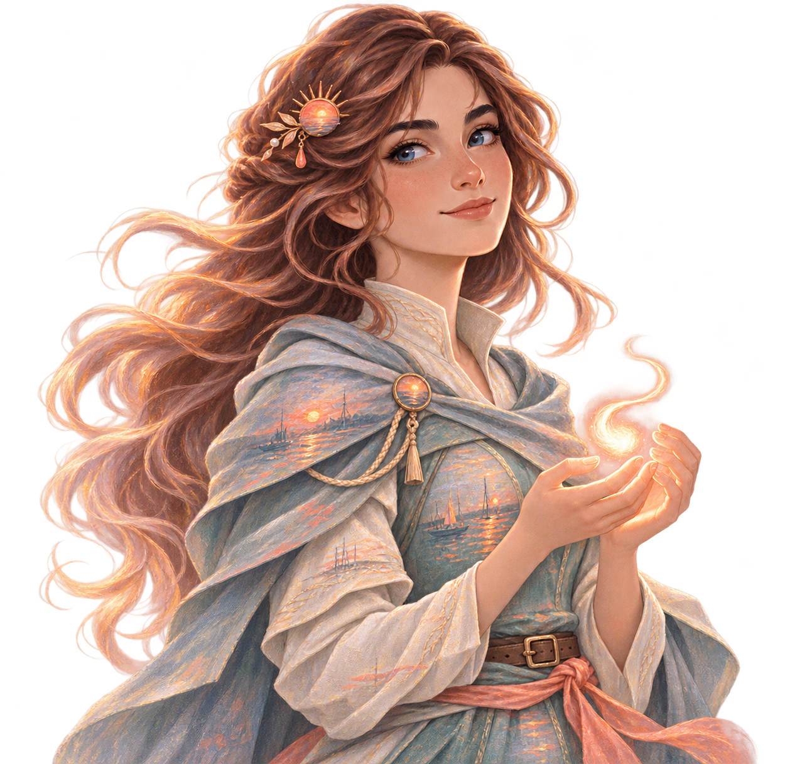
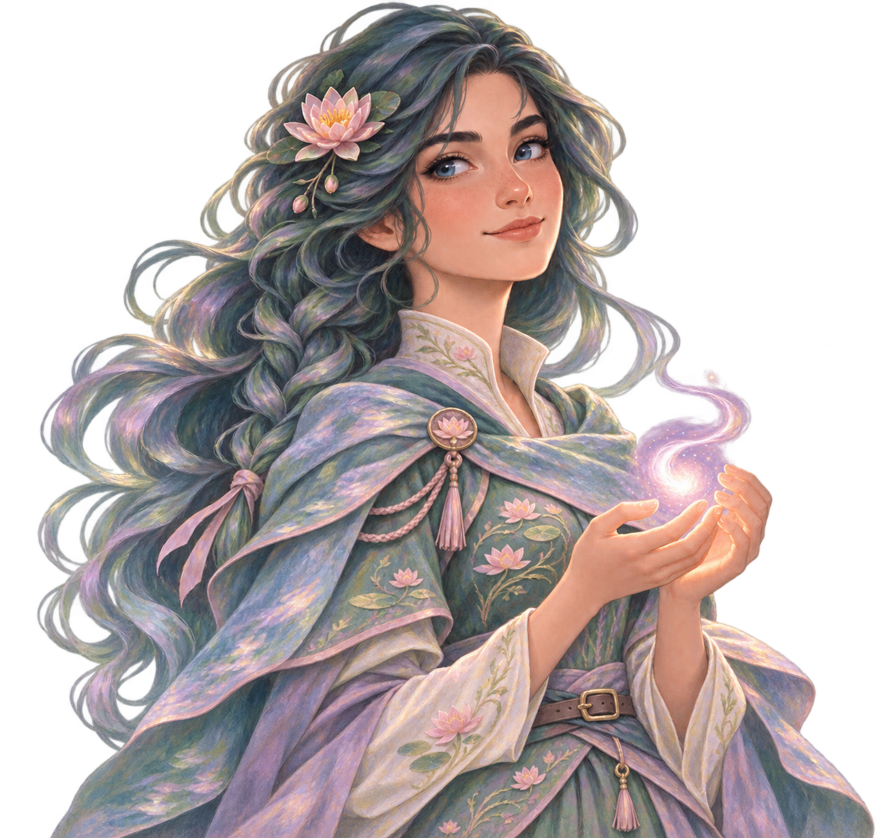

A Noite Estrelada
Cabelo azul noturno, capa bordada em estrelas e um brilho lunar entre as mãos.
✦ SEU CÉU DE POSSIBILIDADES
Um espaço tranquilo para organizar a semana, planejar aulas e deixar as ideias encontrarem seu caminho.
Encontre clareza para o que você quer ensinar. A LYRA ajuda a transformar intenções em planos possíveis.
EXPLORE SEU ESPAÇO
Cada grande aula começa com uma pequena curiosidade.
✧✦ PLANEJAMENTO
Conte o que você quer ensinar. A gente começa com um rascunho e ajusta pelo caminho.
Preencha o tema ao lado e a LYRA organiza as primeiras ideias para você.
✦ Ajuste o texto para combinar com a sua turma.
✦ AGENDA
Anote compromissos e dê espaço para a sua semana respirar.
SUA GRADE SEMANAL
Cadastre as aulas recorrentes e elas aparecem aqui, organizadas por dia.
✦ CONVERSA
Traga uma dúvida, uma ideia ou só o primeiro fio de uma aula.
Aqui para pensar com você
Nesta prévia, as respostas são demonstrativas. As mensagens não saem deste navegador.
✦ IDENTIDADE VISUAL
Cada tema muda as cores, a paisagem e o visual da Lyra. As novas composições homenageiam a luz e os jardins de Claude Monet.
TEMA EM USO
Azuis profundos, ouro e movimento no céu.
Cabelo azul noturno, capa bordada em estrelas e um brilho lunar entre as mãos.

Cabelos cobre, linho azul-neblina e um adorno de sol coral.

Cabelos verde-azulados, flores d’água e tecidos em jade e lilás.
✧ Sua escolha fica salva neste navegador e pode ser trocada quando quiser.